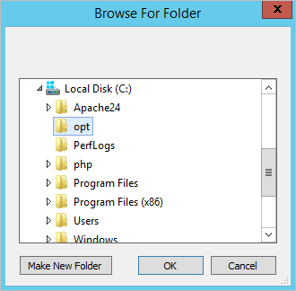
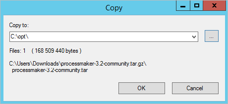
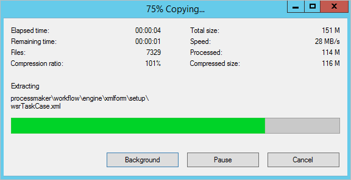
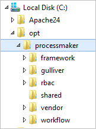
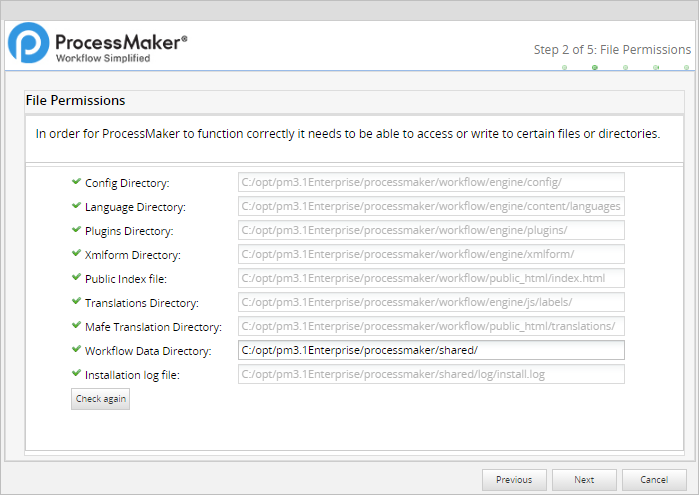

- Overview
- Recommendations
- Configuration Steps
- Step 1: Download ProcessMaker
- Step 2: Extract ProcessMaker
- Step 3: Apache Configuration
- Step 4: Setting up ProcessMaker
- Pre-Installation Check
- File Permissions
- ProcessMaker Open Source License
- Database Configuration
- Workspace Configuration
- First Login
- Step 5: env.ini Configuration
- Step 6: Change the db.php file
- Errors During Installation
Overview
This guide provides instructions on how to manually install ProcessMaker in Windows. These ProcessMaker versions have been tested in the following Windows platforms:
| ProcessMaker Version | Platform | Notes |
|---|---|---|
| ProcessMaker 3.0 - 3.1.0.8 ProcessMaker 3.1 - 3.1.3 ProcessMaker 3.2.x |
Windows Server 2012 R2 | Stack 210 |
| ProcessMaker 3.2.2 - 3.2.3 | Windows Server 2012 R2 | Stack 215 |
| ProcessMaker 3.3.0 - 3.3.17 | Windows Server 2016 | Stack 230 Stack 240 |
| ProcessMaker 3.4.x | Windows Server 2016 Windows Server 2019 |
Stack 240 Stack 260 |
| ProcessMaker 3.4.4 - 3.7.6 | Microsoft Windows Server 2019 | Stack 270 |
| ProcessMaker 3.8.x | Microsoft Windows Server 2019 Microsoft Windows Server 2022 |
Stack 280 Stack 290 |
Before installing ProcessMaker, check the Installation Requirements of your version of ProcessMaker to see whether your server meets the necessary hardware and software requirements. Also, do not forget to read the following recommendations:
Recommendations
- Check our Supported Stacks page and the Compatible Browsers List for ProcessMaker 3.0, ProcessMaker 3.1, ProcessMaker 3.2, ProcessMaker 3.3, ProcessMaker 3.4, ProcessMaker 3.5 - 3.6, ProcessMaker 3.7 and ProcessMaker 3.8.
- To use ProcessMaker with Internet Explorer 11, please read the Internet Explorer Compatibility page.
- ProcessMaker is not compatible with MySQL STRICT mode, which is enabled by default as of MySQL 5.6.6. Read the Turning Off MySQL STRICT Mode section to learn how to disable it.
Configuration Steps
These are the general configuration settings for the supported stacks.
Step 1: Download ProcessMaker
Refer to one of the following sections for the ProcessMaker edition you intend to install:
Community Edition
Go to ProcessMaker's SourceForge page and download the most recent tarball of ProcessMaker, which should be named processmaker-X.X.X-community.tar.gz.
Alternatively, download the tar.gz file with wget.
Replace the "x" with the version number.
Standard, Corporate or Enterprise Edition
To obtain the Standard, Corporate or Enterprise Edition, buy one of the Enterprise Subscription Plans.
After completing the purchase of an Enterprise Subscription Plan, an email will be sent that includes links to download the Enterprise Edition and the corresponding license.
Step 2: Extract ProcessMaker
After the download has finished, follow these steps to extract the ProcessMaker install files:
-
Create the folder where ProcessMaker will be installed. For example, create a folder named "opt" on the disk
C:\.
-
Open the archive with a file archiver shuch as 7zip. If using 7zip, open the
tar.gzfile and in the window that opens, click the Extract option.
-
Select the ... button to display the Browser for Folder window, and then search for the specified folder. Select it and click OK.

The location selected displays in the Copy to field. Click OK to begin the extraction process.

The content of the
tar.gzfile is extracted toC:\opt.
-
Once the process is completed, all ProcessMaker files will be located in the opt folder. Make note of this location.

Step 3: Apache Configuration
ProcessMaker needs to use the ldap, authnz_ldap, deflate, expires, rewrite, ssl and vhost_alias modules in Apache.
To enable these modules, edit the Apache configuration file httpd.conf, which is located at a path such as c:\Apache24\conf\httpd.conf.
Uncomment the following modules (remove the # symbol at the beginning of each line):
LoadModule deflate_module modules/mod_deflate.so
LoadModule expires_module modules/mod_expires.so
LoadModule ldap_module modules/mod_ldap.so
LoadModule rewrite_module modules/mod_rewrite.so
LoadModule ssl_module modules/mod_ssl.so
LoadModule vhost_alias_module modules/mod_vhost_alias.so
Save the changes and close the file.
The next step is to add the ProcessMaker Virtual Host file to the Apache Virtual Host configuration. To do this, follow these steps:
-
Copy the file
C:\opt\processmaker\pmos.conf.exampletoC:\Apache24\conf\extra\and rename it from pmos.conf.example to pmos.conf.
-
Edit the file
C:\Apache24\conf\httpd.confand add the following line at the end of the file:Include conf/extra/pmos.conf -
Open pmos.conf that was copied to
C:\Apache24\conf\extra\and edit it to fit your Apache environment:#processmaker virtual host <VirtualHost your_ip_address > ServerName "your_processmaker_domain" DocumentRoot C:\opt\processmaker\workflow\public_html DirectoryIndex index.html index.php <Directory C:\opt\processmaker\workflow\public_html> Options Indexes FollowSymLinks MultiViews AddDefaultCharset UTF-8 AllowOverride All Require all granted ExpiresActive On <IfModule mod_rewrite.c> RewriteEngine On RewriteCond %{REQUEST_FILENAME} !-f RewriteRule ^.*/(.*)$ app.php [QSA,L,NC] </IfModule> ExpiresActive On #Deflate filter is optional. It reduces download size but adds slightly more CPU processing: AddOutputFilterByType DEFLATE text/html text/css text/plain text/xml text/x-component text/javascript application/x-javascript application/javascript application/json application/xml application/xhtml+xml application/x-font-ttf application/x-font-opentype application/x-font-truetype image/svg+xml image/x-icon image/vnd.microsoft.icon font/ttf font/eot font/otf font/opentype </Directory> </VirtualHost> The DEFLATE filter is optional. It reduces download size, but adds slightly more CPU processing. Save the changes.
In order to configure the pmos.conf file follows these steps:
Replace
your_ip_addresswith the IP number or domain name of the server running ProcessMaker. If only planning on running and accessing ProcessMaker on your local machine, then use the IP address "127.0.0.1". To use ProcessMaker on a machine using a dynamic IP address (such as a machine whose IP address is assigned with DHCP), then use*, which represents any "IP address". To use a port other than the standard port 80, then it is necessary to also specify the port number.Specify your DNS. If your DNS or
C:\Windows\System32\drivers\etc\hostshas a defined domain for ProcessMaker, then use that domain foryour_processmaker_domain. Otherwise, use the same IP address foryour_processmaker_domainas was used foryour_ip_address. For more information, see the Apache Virtual Hosts Documentation.
Example 1:
ProcessMaker is installed in the C:\opt\processmaker directory and is running on a server at the address 192.168.1.100:
Example 2:
ProcessMaker is installed in the C:\Users\fred directory on your local machine at port 8080 with a dynamic IP assigned by DHCP:
Example 3:
ProcessMaker is installed in the C:\opt\pm3.3 directory at the IP address 123.45.67.89 and the domains www.example.com and any variant of X.example.com:
Note that www.example.com and *.example.com need to be defined in the server's DNS or C:\Windows\System32\drivers\etc\hosts file for this example to work correctly.
After altering the pmos.conf file, any Apache configuration file, or the php.ini file, the Apache service needs to be restarted for the changes to take effect.
Go to Home > Control Panel > System and Security > Administrative Tools and double click on Services. In the Services window that opens, right click on the "Apache24" service and select Restart from the dropdown menu.
if there is no problem in the Apache configuration, then the Status of the "Apache24" service should show "Running" after it is restarted:
Step 4: Setting up ProcessMaker
After all ProcessMaker configurations are set up, open a web browser and enter the IP address (and port number if not using the default port 80) where ProcessMaker is installed. For instance, if ProcessMaker is installed at the address 192.168.10.100, go to http://192.168.10.100; or if it is installed locally at port 8080, go to http://127.0.0.1:8080.
Then, in the web browser, use the installation wizard to complete the ProcessMaker installation. The wizard should work on any type of computer that is capable of running Apache, PHP, and MySQL.
Pre-Installation Check
The first screen of the installation wizard checks whether the server meets the requirements to install ProcessMaker.

Where in the Pre-installation Check screen, the PHP recommendation message displays:
- For ProcessMaker 3.2.3 and earlier: "PHP recommended version 5.6 or higher (7.0 not supported)"
- For ProcessMaker 3.3.0 and later: "PHP recommended version 5.6 or higher, 7.2 is not yet supported"
- For ProcessMaker 3.4.0 and later: "PHP recommended version 7.1 or higher, PHP 7.2 is not yet supported"
- For ProcessMaker 3.4.4 and later: "PHP recommended version 7.3, we maintain compatibility starting with PHP 7.1"
This screen checks the versions of PHP, MySQL, and cURL to ensure that the necessary PHP modules are enabled and PHP memory_limit is at least 80MB. Requirements that are not met will be marked as No. Fix any missing requirements before continuing with the installation.
File Permissions
The second screen of the installation wizard lists the paths of the directories where ProcessMaker stores its files and checks whether those directories have the correct file permissions.

If there is a problem accessing some files or directories, check to make sure the file permissions of the directories are set, so the web server administrator user running ProcessMaker can access them, then click the Check again button to refresh the list.
It is possible to change the location of the shared directory, where files containing process and case data are stored. This directory is placed inside the ProcessMaker installation directory under shared by default, but it can be placed in another location or on a Network Address Translation (NAT) server. If the default location for the shared directory is not used, make sure that the chosen location has the proper file permissions so that it can be accessed by ProcessMaker, but is still restricted from normal users on the server who shouldn't have access to sensitive files. It is recommended to regularly back up the shared directory and MySQL files to prevent data loss.
When file permissions are properly set, click Next.
ProcessMaker Open Source License
The third screen of the installation wizard displays the ProcessMaker license.

Mark the option I agree and click on Next to continue the installation.
Database Configuration
The fourth screen of the installation wizard configures the connection to the MySQL database.
The Next button remains disabled until all database configuration fields contain values. Follow these steps to configure the MySQL database connection:
-
Select the database engine that you are using, in this case, it would be MySQL.
-
Enter the hostname in the Host Name field. If connecting to the local machine, use localhost.
-
Enter the port which the database is going to use.
-
Enter the root user’s username and password to the MySQL database in the User Name and Password fields, respectively.
-
Click Test Connection to verify the connection to the database. If the ProcessMaker install wizard cannot connect to the MySQL database for any reason, an error message displays.
-
After you have verified the connection, click Next.

Workspace Configuration
The last step of the installation wizard is to configure the username and password of the Administrator user, which are both "admin" by default.
The ProcessMaker workspace and its database can also be configured in this step.

Follow these steps to configure the workspace name and Administrator user:
-
Enter the workspace name in the Workspace Name field, it only allows alphanumeric characters and no more than 29 characters long.
-
Enter the name of the First user, by default, is “admin”, this user will have all the permissions.
-
Provide the password for the admin user.
Important! The “admin” user will be able to access all the features and functionalities in the ProcessMaker installation, such as system configuration, process creation, and editing, user and group management, case management, and report and dashboard oversight, among others. Thus, it is strongly recommended to create a strong password for this account. Take a look at this list of password dos and don’ts. Also, consider using a strong password generator like this one.
Follow these steps to configure the workspace database:

-
Provide a new name for the Workflow Database Name, by default is the same name as the workspace with a “
wf_” at the beginning, to do this it is needed to check the Change database name option.
If the database name already exists you can delete it and recreate the same but clean by checking the Delete database if it exists option.
By default, the installation wizard creates a new MySQL user who is granted access to a new database named "
wf_workflow" that will store ProcessMaker data. To use the existing MySQL user instead of creating a new user, mark the Use the current user as the database owner option. -
Click Check Workspace Configuration to verify the configuration settings are correct. One or more errors displays if there are settings that cannot be used If that is the case, the error will explain where the error is, the most communes are the following:
a. Not passed: This warning displays when the database name already exists, it also displays this warning “WARNING: Database already exists, check “Delete Databases if exists” to overwrite the existing databases.”

b. Please enter a valid Workspace Name / Admin Username / Workflow Database Name: This warning displays when there is an invalid character or the name is too long and needs to be changed.
c. The password confirmation is incorrect: This warning displays when the passwords provided are not the same.
-
After you configure the workflow, click Check Workspace Configuration and if all correct click Finish.

If there are no problems, the message "ProcessMaker was successfully installed" will be displayed.

If there was a problem creating the database an error message will be displayed. In this case, check the configuration of MySQL and its my.cnf file.
If there was a problem writing the ProcessMaker files, change the file permissions of the directories to give Apache access.
First Login
Once ProcessMaker has been successfully installed, the web browser will be redirected to the login page. The Welcome to ProcessMaker screen will appear:

To avoid seeing the Welcome to ProcessMaker screen on every subsequent login, mark the option Don't show me again.
Follow these steps to log into ProcessMaker:
-
Enter the username and password of the Administrator user, which is "admin" by default.
-
Select the language you prefer.
-
Click on Login to enter ProcessMaker.
The workspace is automatically loaded.

The login page can be customized. For more information see Login Settings.
Note: If a previous version of ProcessMaker was accessed by the web browser unintentionally, it is recommended to clear the browser cache after installing ProcessMaker to clear any stored pages from previous versions of ProcessMaker.
Step 5: env.ini Configuration
Once ProcessMaker is installed, some additional parameters must be set in the main env.ini configuration file.
To do this, edit the env.ini file located at <install-directory>/processmaker/workflow/engine/config/env.ini with a plain text editor.
Add the following lines:
Note: It is recommended the following configuration if there is a production environment.
These configurations also can be applied or not to the php.ini file.
Save changes and restart Apache.
Step 6: Change the db.php file
This file is located in <install-directory>\processmaker\shared\sites\workflow.
For more information about the location of this file in the different platforms click here.
This file redirects the browser to the database IP direction. Replace the HOST fields of this file to 127.0.0.1 (if it was installed locally) and not to localhost. Otherwise, redirect this file to the IP where the database is installed.

Errors During Installation
If an error occurs during the installation, check the installation log file:
File Locations
Depending on the errors found in the installation log file, check the following files:
The web server configuration file for Apache:
The ProcessMaker website configuration file for the web server with Apache:
The PHP configuration file:
The MySQL configuration file:
The ProcessMaker configuration file where the components are installed:
The ProcessMaker configuration file for database connections:
The ProcessMaker redirection to the login screen:
If the following error appears at the login screen:

This error indicates that the installer was unable to access the MySQL databases to install the translations. Make sure that the MySQL port (which is 3306 by default) isn't blocked by a firewall and MySQL is configured to accept connections from the server running ProcessMaker.
Apache Possible Configuration Issues
Refer to the following sections that pertain to possible Apache configuration issues:
Setting Apache as a Service
If Apache is not already running as a service, then configure it to automatically start as a service when booting up:
No ServerName Warning
If a warning message similar to the one below appears when restarting Apache:
Then, the ServerName needs to be set for Apache. Edit the httpd.conf file and add the line:
For instance, if running ProcessMaker from a local machine, then:
Non-Standard Port
If running ProcessMaker on a port other than the default port 80, add the following line to the httpd.conf file:
For instance, if running ProcessMaker from a local machine at port 8080:
Or simply:
Note: If Apache is using the default port 80, then configure other programs to not use port 80. Check whether a program is currently listening on port 80 with the command:
MySQL Possible Configuration Issues
Refer to the following sections regarding possible MySQL configuration issues:
- Setting the root password
- Starting as a Service
- Disabling MySQL STRICT Mode
- MySQL Password with Special Characters
- Disabling ONLY_FULL_GROUP_BY mode
Setting the root Password
If MySQL doesn't have a root password, set one for better security:
If you have forgotten the root password, see these instructions to reset it.
Starting as a Service
When logging into MySQL, if the following error message appears:
Then MySQL needs to be started as a service:
If MySQL was installed from its RHEL/CentOS package, it should automatically start as a service if the server reboots. If not, then use chkconfig to add it as a service:
Disabling MySQL STRICT Mode
MySQL can not use STRICT mode with ProcessMaker. If STRICT mode is enabled, then the following error message will appear when trying to login to ProcessMaker for the first time:
To check if MySQL is configured to use strict mode, open the file my.cnf with a plain text editor and look for the following line:
Note: Search for a line that contains STRICT_ALL_TABLES mode, and then disable it. In general remove all the lines with STRICT_TRANS_TABLES, STRICT_ALL_TABLES, and other SQL modes that may be valid in the specific MySQL configuration because they enable the STRICT mode.
Then, restart MySQL or reboot for the new configuration to take effect. If ProcessMaker has already been installed, then you will need to delete the existing wf_workflow database in MySQL and reinstall. To do this first log in to MySQL as the root user from the command line:
Enter the root password for MySQL. Once in MySQL, drop the wf_workflow database (or whatever name it was given during installation).
Then, redirect your web browser to your server's location and follow the steps to reinstall ProcessMaker.
MySQL Password with Special Characters
The following error is displayed during the ProcessMaker installation when the MySQL password contains a character that is not a letter or a number, like @ # $ % ^ ( /.
Please change/reset your MySQL password and try to install ProcessMaker again. This is a known issue that will be fixed in ProcessMaker 3.2.
Disabling ONLY_FULL_GROUP_BY mode
Available Version: As of ProcessMaker 3.4.0.
ProcessMaker does not support ONLY_FULL_GROUP_BY mode, which is enabled by default in MySQL 5.7.5 and later. For instructions, see Disabling ONLY_FULL_GROUP_BY mode.